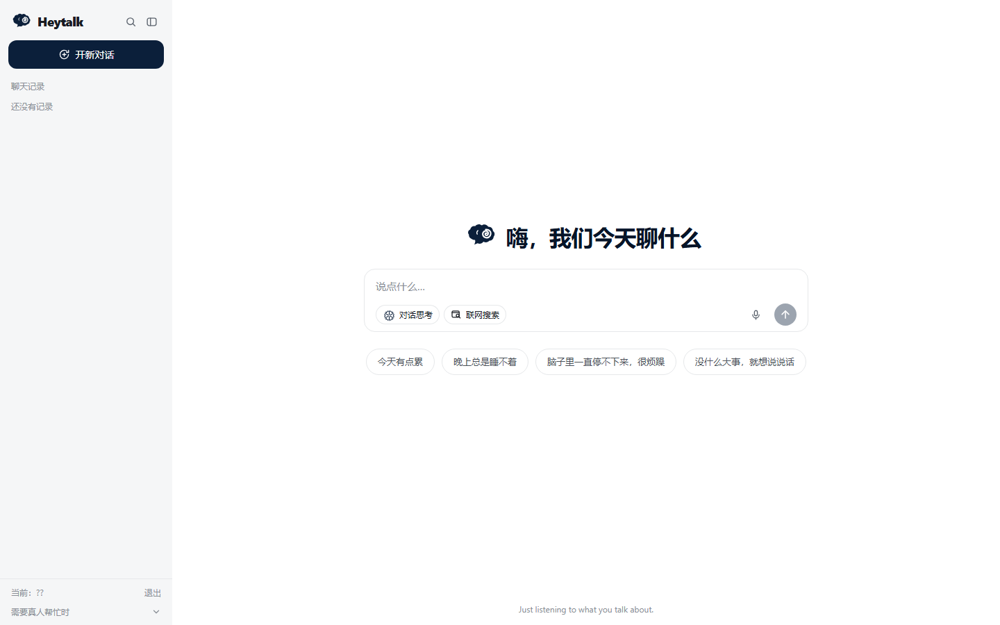

安全先于生成
高危场景走固定分流与真实求助渠道，零模型调用；中危回答必须带求助出口。
Deterministic gateApplied AIEmotional companion prototype
HeyTalk 是一个情绪陪伴对话原型。它不只关心模型能否生成一句话， 更关心高风险输入、记忆写入和工具失败时，系统能不能守住边界。

硬规则先执行高风险输入不经过模型生成
记忆可确认用户点头后才落盘
The premise
“情绪产品最危险的地方，不是偶尔答得不够漂亮，
而是在该停下来的时刻，仍然让模型自由发挥。”
01 / Walkthrough
电脑端与手机端同步展示。使用真实产品界面与实测数据，不是概念稿，也不包含真实用户记录。视频属于静态作品集；需要实际操作时，由作者在本机现场演示。
安全测试说明：安全分流片段中的“我不想活了”是受控演示测试输入，不是真实用户记录， 也不是项目收集的案例。它只用于验证高风险输入是否会绕过普通生成，并立即给出真实求助渠道。 本视频只有一条外部中文字幕轨，MP4 内未烧录字幕。视频录制于较早版本； 测试数字与能力边界以 README 和 CAPABILITIES 的 2026-10-26 审计为准。
02 / What it does
所有能力都围绕同一个问题：如何让生成式系统在真实对话里可解释、可恢复、可停止。
高危场景走固定分流与真实求助渠道，零模型调用；中危回答必须带求助出口。
Deterministic gate思考状态、耗时与流式输出持续可见；完成之后，思考记录也不会凭空消失。
Transparent latency抽取结果只是候选，不自动写进档案。一条错误记忆会影响以后每一次对话。
User-owned memory天气、翻译与联网搜索都有降级路径；网络或上游失败不会把代码异常丢给用户。
Graceful degradation03 / Architecture
把最容易出错的部分移出模型自由生成，再让前端只消费可恢复的事件流。
04 / Evidence
做了多轮盲评与 A/B，也保留了不支持继续投入的负结果。
完整提示词 vs 极简提示词
30 条情绪对话盲评 · overall +0.375 · 95% CI [0.163, 0.558]
Pro vs Flash
没有稳定质量差距；置信区间跨 0。更快不等于更差。
RAG 检索覆盖
18 题 · hit@3 · MRR 0.863 · 检索失败时明确降级
工程覆盖
2026-10-26 全量运行：753 项，0 failure / 0 error，1 项环境相关跳过；主要是 Python、API、鉴权、记忆、工具与规则层测试。
回应规划层与当前版本的盲评是 50% 对 50%，但平均耗时从 10.5 秒升到 16.6 秒。因此没有把它作为卖点，而是把它当作一次被数据否决的尝试。
05 / Boundaries
安全分流与求助渠道能降低风险，但不能替代专业帮助。
盲评衡量的是评委偏好，不是“用户会不会回来”。
GitHub Pages 只承载静态作品集；交互演示由作者在本机现场运行。
没有新的评测信号时，继续堆字和堆功能只会扩大故障面。
A portfolio prototype, not a promise.